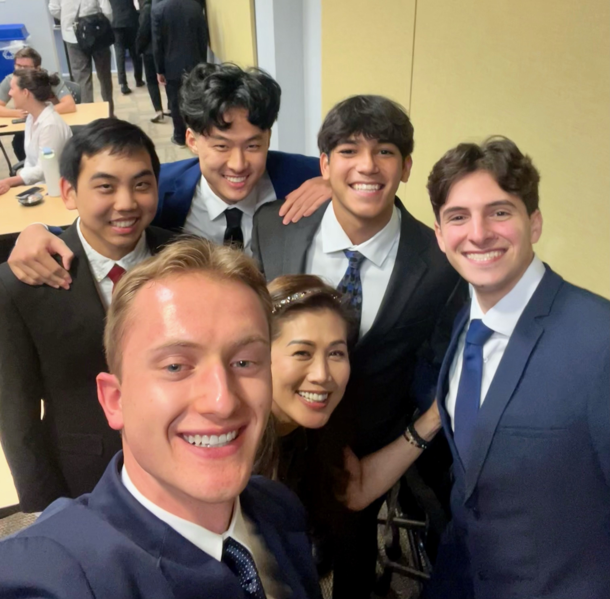

During the summer of 2024, I had the opporturtunity to take part in a 10-week program as a Market Analysis and
Validation Engineering Intern at the Electric Reliability Council of Texas, Inc. (ERCOT). During my time at ERCOT I analyzed
large, complex datasets and extracted meaning insights from that data. My role consisted of condensing said data into a more
appropriate size using Python, and then graphing that data using a Python graphing package called Ploty. I then created
a webapp dashboard where I hosted my graphs and findings. To accomplish this I used the Python framework Streamlit.
In addition to this project, I took on a side project, investigating potential frameworks for the redesign of one
of ERCOT's business intelligence tools. During this project I investigated Django, a robust Python framework that allows for
efficient and clean web design. Finally, at the end of my internship I presented both of my projects to C-level executives.
There were many things I learned at ERCOT that I plan to take with me as a continue to grow as an engineer and software
developer. Given the industry ERCOT is in, I learned much more about the energy market and how energy actually gets from the plant
to your door. I also learned the importance of proper code documentation during my time at ERCOT. Since I was the only member
working on my project, it was important that I properly document my code so that my team could properly use my tool after
my internship ended. ERCOT also gave me exposure to data analytics and data visualization, two areas I have had very little
experience with in school.

Comfort Cuff is a project that I created along with other computer engineering and electronic systems engineering technology (ESET) majors. This project was developed during Tamuhack, one of the largest annual hackathons in Texas, hosted at Texas A&M University. A hackathon is where talented engineers are given 24-48 hours to form groups and collabratively create a product that is then pitched to judges. My team and I developd an arm-strap for an alternative blood pressure reading system. This system used motors and pulleys as opposed to the current air pressure system. This product was made in an attempt reduce a condition called "white coat hypertension" which can lead to inaccurate blood pressure readings. Comfort Cuff used an Arduino to communicate with a bluetooth module to appropriate tighten and loosen the pulley system around the user's arm.